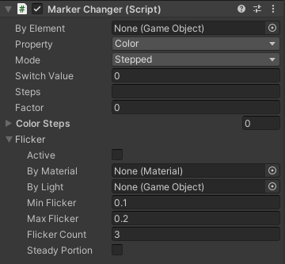

Marker Changer
To add and remove Markers see Add and Remove Components
The properties of lights and materials are set by Marker Changer components.
- By Element: the element that updates this property.
- Property: the property that should change.
- Mode: the changing mode (stepped, gradual or switch).
- Switch value: if mode is set as Switch, a value between 0 and 1 must be written here to work as the switch threshold.
- Steps and Color Steps: the list of steps (separated by space). For the accepted color names and custom colors see Appendix 1. Alternatively, you can pick colors in Color Steps (if you use this mode, the text-based steps won’t be read)
- Factor: use this number to set the base emissive intensity for the emissive color of a material (it doesn’t apply to any other property and will be ignored if there is a changer with Intensity as its property).
You can created a flickering property by the Flicker sub-property of the changers. Each flickering property needs its own Flicker. It is important to continue flickering the Progress’s continuity mode is set to Cycle or Reverse:
- Property: the flickering property. A Changer for this property should exist.
- By Material and By Light: the flickering of this property will match that of the selected material or light (if they have a the same flickering property). The remaining items (below) will have no effect on the flickering if a parent material or light is set.
- Min and Max Flicker: the minimum and maximum length of each flicker (relative to the duration of the element). If you have multiple Marker Flicker’s only the first one’s Flicker values and counts are used.
- Flicker Count: the number of flickers.
- Steady Portion: if this is selected there will be no flickering in a continuous portion of progress. The length of this portion is equal to: (1 – min * count) / 2
|
 |
Important: because of an issue in Unity, lights imported from Blender do not pass their children transforms correctly. Therefore, Tames need to correct this at the start of each Play session. If you have such a light (for example with an interaction area attached) in a Blender file, you need to use a Marker Origin component on the Blender’s file’s main object in the scene to let Tames know the model was created in Blender.